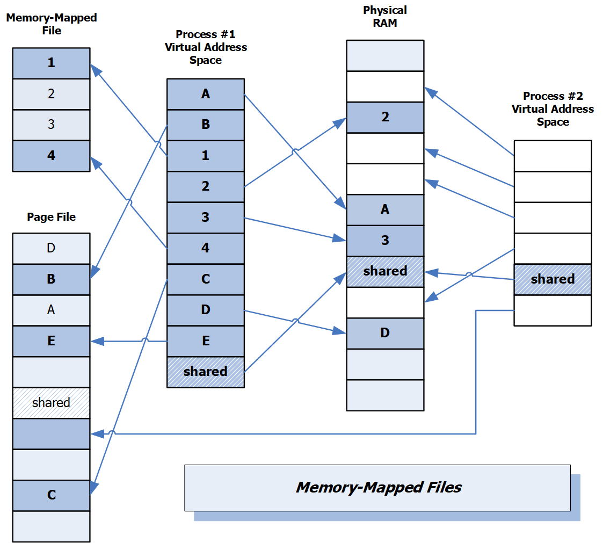

Programs that run on a modern operating system are given a view into platfrom memory that appears to be
linear, but in fact is not. The operating system needs to support multiple concurrent users and a large
number of active programs, often requiring much more than the available random access memory (RAM).
Fig 1. Virtual Memory Structure

It does that by using blocks for memory contents that can be swapped out to a Page Table, implemented as a
memory-mapped file, and to other memory-mapped files holding control and contents for Disk Files and other Devices.
Figure 1. shows a structure for memory-mapping. There is a Virtual Address Space provided as a view into memory
for each running program. Program binaries are broken into 512 or 1024 sized blocks and loaded into physical
memory and the page table, based on availability of physical memory. When a process starts, its binary code is
mapped into physical memory on an available memory page basis. Any blocks that have no available space are mapped
into the page table.
Two processes may share the same block of physical RAM in order to share its contents. That must be protected
from writers clashing with readers by using system-wide synchronization constructs like named mutexes.
As new processes start, the OS may map some of the pages of a running process into the page table, allowing a
newly created process to use them for its binary. Each OS has its own algorithms for deciding when a block of
physical RAM should have its contents written to the page file and when it should be swapped back in. This
swapping process is also used for large files and devices.
The event of initiating a page swap is called a page fault.
A page fault will occur, for example, when code in an active page attempts to reference a page that has been
swapped out to the page table.
The rate of page faults has a significant impact on process performance.
Page mapping is supported by a symbiosis of OS and hardware processing.
2.0 Process Memory Sections
Process memory is divided into:
Static memory holding code and global data which persist for the lifetime of the program.
Stack memory is allocated when the program's thread of execution enters a new scope, delineated by "{...}",
and deallocated when execution leaves the scope. For native code this scratch-pad memory holds function parameters
and all local objects declared within the scope. For managed code stack memory holds
values for value types and references to heap-based objects for managed types. This is true for both function parameters
and instances declared within the current scope.
Stack memory is a temporary store. Entities created in a stack frame have lifetime limited to time the thread of execution
resides there. For managed code, there is more to that story, discussed in Program Execution.
Heap memory is allocated with calls to new or Box. Native code deallocates heap-based instances with
implicit calls to delete or drop. Managed code uses the services of a garbage collector to defer deallocation
for latter analysis to ensure that no references to the instance remain.
How these sections of memory are used by native code is significantly different than for managed code.
Instances of managed user-defined types all reside in the managed heap. Instances of native types can reside in
static, stack, and native heap memory segments.
3.0 Consequences:
The good: virtual memory systems accomodate many users and many platform processes that should be loaded and become
active when an individual logs in, if a needed process is not already running.
The bad: when a program binary is very large it is much more likely to be subject to page faults when the OS
needs to give memory to other programs. Page fault processing takes a significant amount of time compared to program
processing and may cause very large decreases in program performance.